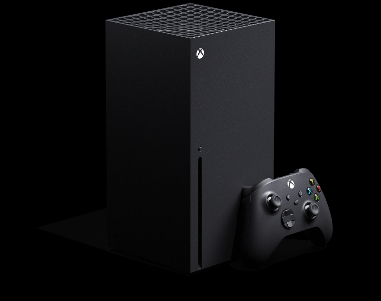

Xbox, en sus versiones Series X y Series S, es una línea de videoconsolas de sobremesa desarrolladas por Microsoft y la cuarta generación de la familia de consolas Xbox. La familia de consolas, conocida colectivamente como "Project Scarlett" y revelada por primera vez en el E3 2019, incluye la Xbox Series X de gama alta, revelada en The Game Awards 2019 y cuyo nombre en código es "Project Anaconda", y la Xbox Series S de menor costo, anunciada en septiembre de 2020 y cuyo nombre en código es "Project Lockhart". Ambas consolas se lanzaron el 10 de noviembre de 2020.
